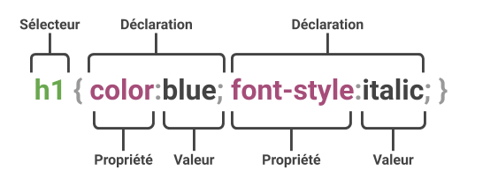

Le langage CSS est destiné à gérer le contenu et la structure d’une page web. Il est techniquement possible de faire de la mise en forme en HTML, mais les possibil ités restent très limitées. Le langage CSS est donc là pour étendre considérablement les possibilités graphiques. Le sigle CSS signifie Cascading Style Sheet autrement dit en français, feuille de styles en cascade. Cela indique bien que les CSS permettent de styler, de mettre en forme une page web. Le mot cascade, quant à lui, fait référence à une notion importante que l’on appelle l’héritage et sur laquelle nous reviendrons plus en détail dans la suite de ce cours.
Il est aujourd’hui impensable de ne pas utiliser des CSS pour la mise en forme d’une page web tellement les avantages sont nombreux :
Il s’agit de distinguer clairement le code correspondant au contenu (structure de la page, texte de la page, sémantique) du code correspondant à la mise en forme (couleurs, positionnement). Ces deux aspects étant gérés respectivement par les langages HTML et CSS. Le projet CSS Zen Garden est un bon moyen pour illustrer ce principe. L’idée de ce site est de proposer aux internautes d’effectuer la mise en page d’une page web fournie en utilisant uniquement CSS. Il est donc interdit de modifier le code HTML. Ainsi, les trois pages web pour lesquelles vous avez un aperçu ci-dessous ont toutes les trois exactement le même code HTML et se distinguent donc uniquement par leur code CSS (ainsi que des images ajoutées via CSS).
Depuis longtemps, grâce à CSS, il est possible de distinguer pour une page web sa mise en forme à l’écran de sa mise en forme lors de l’impression. Cette distinction permet notamment d’éviter d’imprimer les éléments d’interfaces inutiles comme les menus de navigation, d’adapter les marges, la taille des caractères, les couleurs, etc. Aujourd’hui CSS ne permet d’aller beaucoup plus loin. Depuis la version 3 du langage CSS, les media queries sont apparues et permettent désormais de distinguer les différentes définitions d’écran (2560×1440, 1920×1080), mais aussi les différents types d’écrans (smartphone, télévision, projecteur), l’orientation de l’écran (portrait ou paysage), etc. Une page web peut ainsi s’afficher différemment en fonction du support de consultation selon les critères définis par le webdesigner. Compte tenu de l’évolution des usages et de la part substantielle de pages consultées sur smartphone (43% en Europe au moment où ces lignes sont écrites, source statista.com), cette adaptation de l’interface est aujourd’hui indispensable. Il est évident que l’on ne peut pas consulter une page créée pour un écran large avec le même confort sur un écran de smartphone et vice-versa. Il est donc important de prévoir l’adaptation de son interface aux différents supports de consultation.